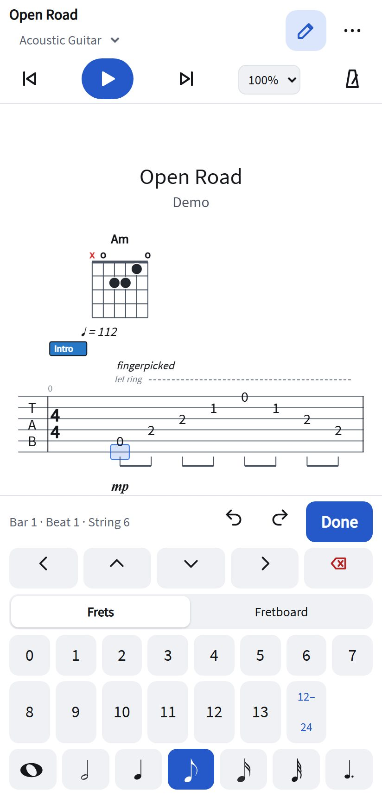

A guitar tab editor for your phone
Most tabs are read on a phone, next to the guitar. SereneTab has a layout made for that: big buttons, a fret pad for entering notes with your thumb, and the tab filling the screen. It runs in the phone's browser, with no app to install.

Read and play
- Tap play; the tab scrolls along with the music.
- Pinch to zoom the tab; the bars reflow to fit the screen.
- Slow it down from the % menu, loop a passage, add a count-in.
- Open Guitar Pro, MusicXML, MIDI and
.gtfiles from the ⋯ menu, from your downloads or cloud folder.
Write on the go
- Tap the pencil, then a string in the tab, then a fret on the pad (or on the guitar neck).
- Swipe left and right to move between beats.
- Press and hold a note for its menu: effects, length, dynamics, bar settings.
- Every change can be undone; the song is saved in the browser as you go.
Tablet or laptop later
On a wider screen the same page shows the full desktop editor with toolbar, sequencer and keyboard
shortcuts. Save the song as a .gt or Guitar Pro file to move it between devices.